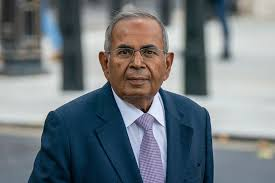

UNITED KINGDOM BIGGEST BILLIONAIRE:-

Gopichand Parmanand Hinduja, widely known as Gopi Hinduja, is an Indian-born British billionaire and the current chairman of the Hinduja Group—a global conglomerate with diversified interests across multiple industries.
As of 2025, he and his family are recognized as the wealthiest individuals in the United Kingdom, topping the Sunday Times Rich List for the fourth consecutive year with a net worth of £35.3 billion .
🧒 Early Life & Education
Born: 29 January 1940, Bombay (now Mumbai), India
Parents: Parmanand Deepchand Hinduja and Jamuna Parmanand Hinduja
Education: Graduated from Jai Hind College, Mumbai
Gopichand began his career in his father's textile and trading businesses in Bombay and Tehran, gaining early experience in international trade.
🏢 Business Career
Gopichand, along with his brothers, expanded the family business into a global conglomerate. Key milestones include:
1980s: Acquired Ashok Leyland (from British Leyland) and Gulf Oil (from Chevron)
1990s: Established banks in Switzerland and India
2012: Acquired Houghton International, the world's largest metal fluids manufacturer, for $1.045 billion
The Hinduja Group now operates in sectors such as automotive, oil and gas, banking, IT, media, and healthcare, employing over 200,000 people worldwide .
💰 Wealth & Recognition
Net Worth: £35.3 billion as of 2025
Awards:
Padma Bhushan (2006)
👨👩👧👦 Personal Life
Spouse: Sunita Hinduja
Children: Three—Sanjay, Dheeraj, and Rita Hinduja
Citizenship: British (since 1997)
Residence: London, including a 60-room mansion on Carlton House Terrace near Buckingham Palace
🏛️ Legacy & Influence
Under Gopichand's leadership, the Hinduja Group has become one of India's most prominent business empires, with a significant global presence.
Their diversified portfolio and strategic acquisitions have solidified their status as influential figures in the international business community.
Click Here For More Billionaire